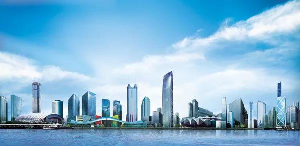
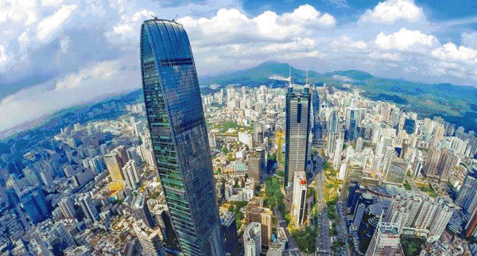
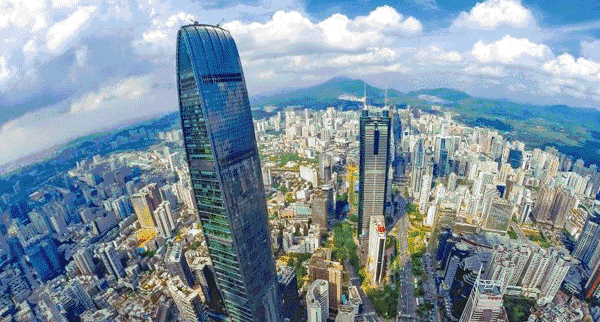
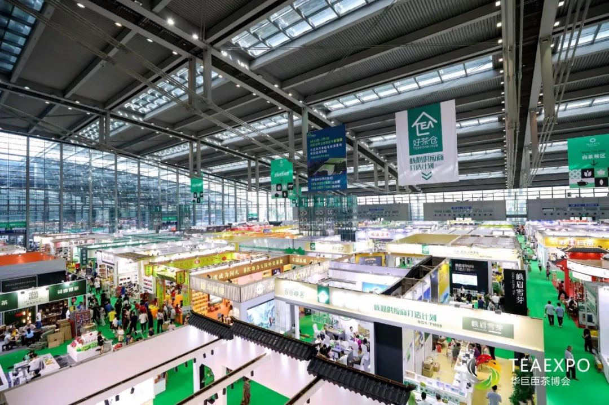
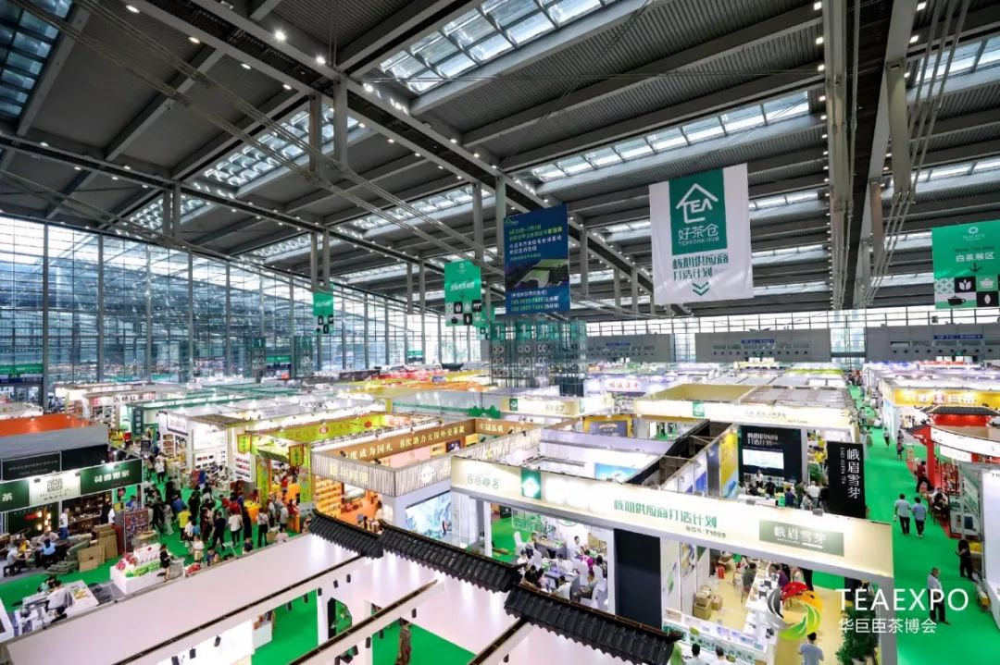
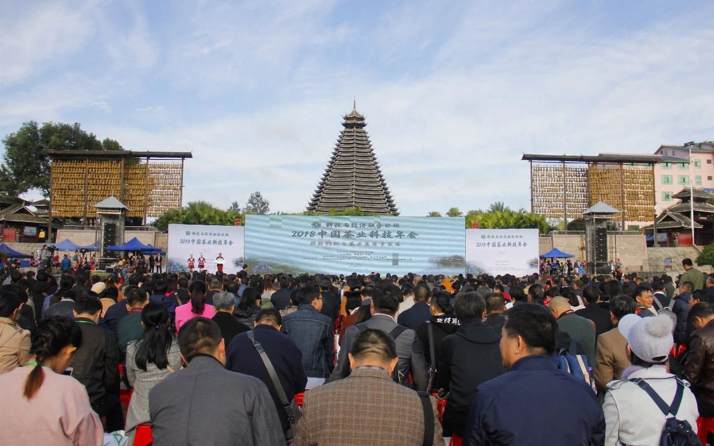

新闻公告详情
重要公告 | 2019中国茶业科技年会将于12月9-13日在深圳举办
2019-11-06

2019中国茶业科技年会
INVITATION
诚挚邀请
会议信息
诚邀各位届时拨冗出席
时间
2019年12月9-13日
地点
广东·深圳
关于我们
中国茶业科技年会（原中国茶叶学会团体会员会议）是我会每年举办的产、学、研、政合作交流的综合性大会，主要参会人员为中国茶叶学会会员，全国各茶叶生产、加工、经营企业，茶叶主管部门，科研院所，茶叶社团，茶馆及特邀代表约800人左右。
中国茶业科技年会从1990年开始，已连续举办了27届。
“
2019中国茶业科技年会”将于12月9-13日在广东深圳隆重召开
。
本次科技年会由中国茶叶学会主办，深圳市华巨臣实业有限公司承办，会议为期五天。


广东·深圳
中国南部海滨城市，毗邻香港。位于北回归线以南，东经113°43′至114°38′，北纬22°24′至22°52′之间。地处广东省南部，珠江口东岸，东临大亚湾和大鹏湾；西濒珠江口和伶仃洋；南边深圳河与香港相连；北部与东莞、惠州两城市接壤。辽阔海域连接南海及太平洋。
是国家经济中心城市、科技创新中心、区域金融中心、商贸物流中心，在国际上知名度、影响力不断扩大。
“深圳”地名始见史籍于1410年（明永乐八年），于清朝初年建墟。 当地方言俗称田野间的水沟为“圳”或“涌”。 深圳正因其水泽密布，村落边有一条深水沟而得名。 深圳的经济特区发展史虽只有30多年，却拥有着6700多年的人类活动史（新石器时代中期就有土著居民繁衍生息在深圳土地上）、1700多年的郡县史、600多年的南头城史、大鹏城史和300多年的客家人移民史。 1979年中央和广东省决定成立深圳市。 1980年8月，全国人大常委会批准在深圳市设置经济特区。 深圳又称鹏城，自特区成立以来，深圳正如展翅高飞的大鹏，搏击风云，遨游长空，勇往直前。

“深圳”地名始见史籍于1410年（明永乐八年），于清朝初年建墟。 当地方言俗称田野间的水沟为“圳”或“涌”。 深圳正因其水泽密布，村落边有一条深水沟而得名。 深圳的经济特区发展史虽只有30多年，却拥有着6700多年的人类活动史（新石器时代中期就有土著居民繁衍生息在深圳土地上）、1700多年的郡县史、600多年的南头城史、大鹏城史和300多年的客家人移民史。 1979年中央和广东省决定成立深圳市。 1980年8月，全国人大常委会批准在深圳市设置经济特区。 深圳又称鹏城，自特区成立以来，深圳正如展翅高飞的大鹏，搏击风云，遨游长空，勇往直前。

深圳市华巨臣实业有限公司是一家以打造茶产业多层次服务平台为核心，集会议展览、产业园区、投资基金、产业互联网、文化传媒等业务为一体的综合性公司，是深圳市农业龙头企业、全国会展百强企业、中国商务部第一批展览业重点联系企业，是茶产业平台型头部企业。
集团坚持以“品牌化、市场化、专业化、国际化”的发展理念，十年如一日，深耕茶产业，主办了全球规模最大的深圳国际茶博会，也是中国农业农村部主办的
“中国国际茶叶博览会”指定承办单位。
2019年，华巨臣在国内外北京、上海、深圳等20多个核心城市举办27场茶博会。
公司已经助力超10000家茶企通过华巨臣茶博会、茶阅世界、好茶仓、茶悦平台拓展了国内外市场，已经成功带动陕西、云南、四川、福建、浙江等各地茶农走出茶山，实现脱贫致富！

会议安排
MEETING ARRENGEMENT
12月9-10日
第九届茶学青年科学家论坛
12月10-12日 2019中国茶叶科技年会
12月10-12日 2019中国茶叶科技年会
历届年会
2015年山东·青岛
2016年 四川·雅安
2017年 湖南·长沙

2018年广西·三江